User manual - Define a data set¶
The interface allows the user to load data samples and analyze them.
1- Creation¶
- A data set can be created through:
the context menu of the study item
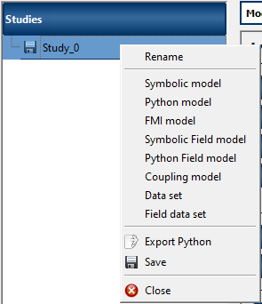
the Data set button of the study window
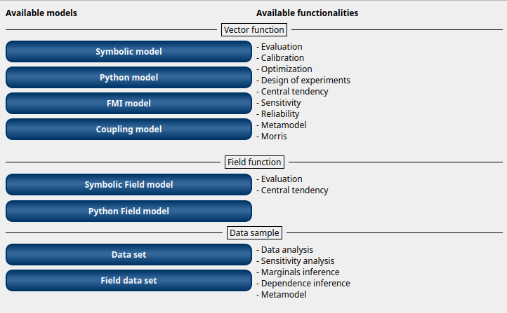
The creation of a data set adds a new element in the study tree, below the Data sets section.
- Different actions are available through the context menu of the data set (by right click):
Rename: Rename the data set
Define the data set: Open a new window to define the data set
Remove: Remove the data set and all the analyses depending on it
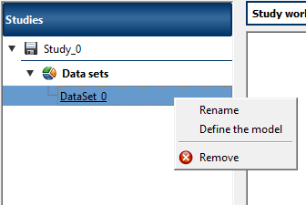
The item is associated with a Study workflow window.
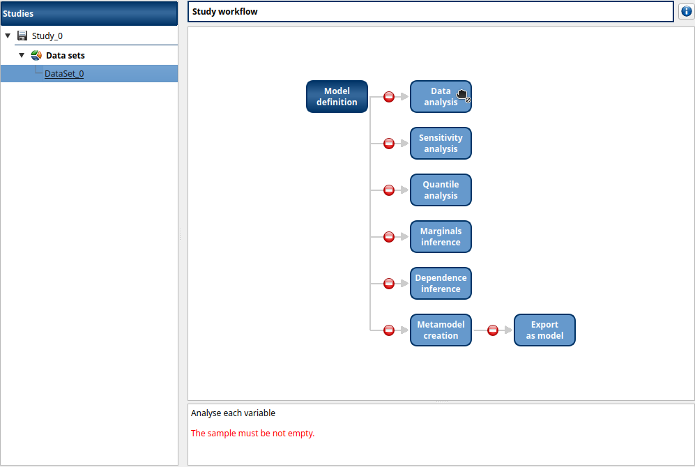
This diagram displays the possible actions an user can perform in real time. An action is active when its box is in dark blue and when a previous one is valid. A box is disabled when its box is in light blue, and the previous one is not valid. When the mouse pointer is hovered over a box, an information message appears at the bottom of the window in order to specify what sort of actions the box proposes. If the box is disabled the message indicates why the previous one is not valid.
On the screenshot above, the mouse points over the Data analysis box: here the action is Analyse each variable (below the main window), but this action is available only if the user has defined at least one variable in the data set. So, here the only option of the user is to complete the data set.
2- Definition¶
- A new data set can be defined through:
the context menu of the data set item
the Data set definition box of the data set diagram
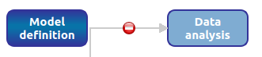
When the definition is required the following window appears:
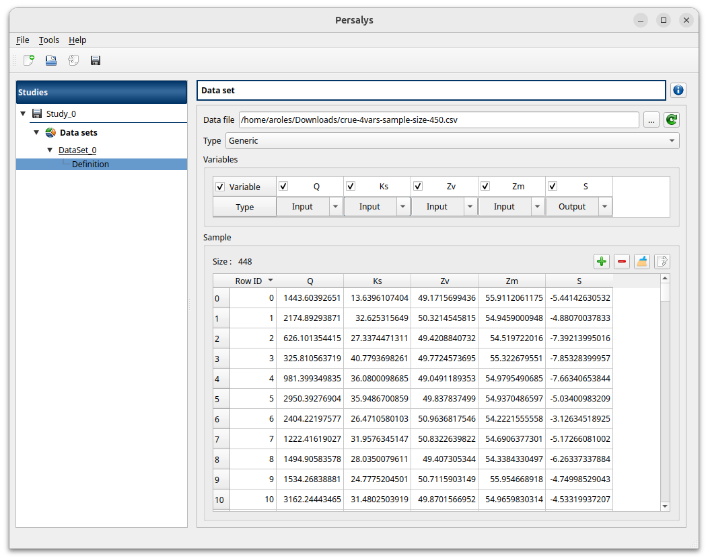
When clicking on the … button, a dialog box offers to select a file (.txt or .csv): validate the dialog box, load the file and its content is displayed in the Sample part of the window.
The Variables part shows the variables of the model in columns.
In Variable row, variable names can be edited (select the cell and left-double click); If no column names is specified in the file header, default names are used (data_0, data_1, …).
The Type row defines the type of each variable: by default, all variables are input except the last one, considered as an output variable. The user can enable/disable one or several variables, by checking off the corresponding column of the table. By default, all the columns are checked off. The model must contain at least one variable to validate the model.
The table containing sample data can be edited using the right click popup menu:
New lines can be added using Add row then can be edited.
Lines can also be removed by selecting them and choosing Remove row(s).
Data cleaning wizard can also be launched. It will look for invalid values in the sample (NaNs/Infs) and will let the choice to the user to remove/replace them. Undefined values can be replaced by variable statistical moments (mean/median) or user-defined values. Each sample variable can be processed independently by toggling the corresponding checkbox in the variable column header.
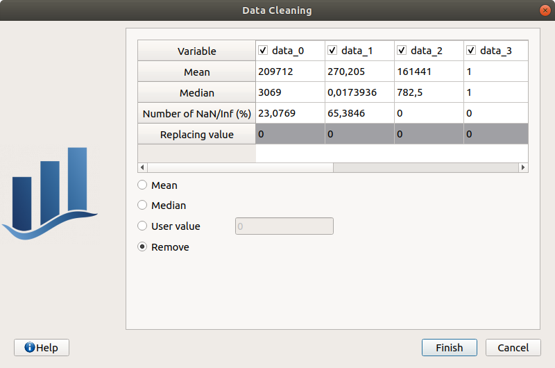
Documentation on the analysis that can be performed on a data set can be found in the Data analysis section of the user manual.
User manual - Define a field data set¶
The interface allows the user to load field data (e.g. time series or more generally 1-D trajectories) and analyze them. Unlike symbolic and Python field data sets they are not associated with a field function or input vector.
1- Creation¶
- There are several ways to create a new data field data set:
Select an item in the context menu of the study item
Click on a button of the study window
The creation of a field data set adds two elements in the study tree, below the Data Field data sets section: a data set item and a mesh item.
Data set item¶
- Different actions are available through the context menu of the data set item (by right click):
Rename: Rename the data set
Remove: Remove the data set and all the analyses depending on it.
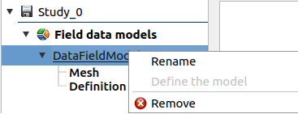
The data set item is associated with a Study workflow window.
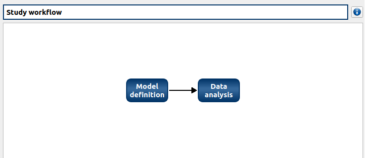
This diagram displays the possible actions an user can perform in real time. An action is active when its box is in dark blue and when a previous one is valid. A box is disabled when its box is in light blue, and the previous one is not valid. When the mouse pointer is hovered over a box, an information message appears at the bottom of the window in order to specify what sort of actions the box proposes. If the box is disabled the message indicates why the previous one is not valid.
2- Model definition¶
A field data set can be defined by clicking on the Definition item, leading to the following window:
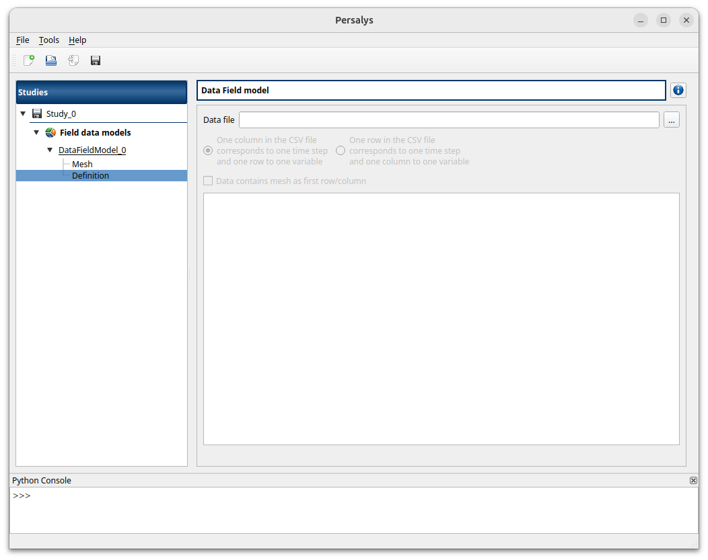
When clicking on the … button, a dialog box offers to select a file (.txt or .csv): validate the dialog box, load the file and then its content is displayed in the table below.
In the table, rows correpond to trajectories and columns contain field values data indexed on same mesh nodes. Warning: The number of mesh vertices must be compatible with the number of column tables.
The appropriate data order can be chosen by selecting the appropriate radio button.
If your data file contains the mesh as first row or column, you can click the checkbox to read it directly form the file.
The table containing sample data can be edited using the right click popup menu:
New lines can be added using Add row then can be edited.
Lines can also be removed by selecting them and choosing Remove row(s).
Data cleaning wizard can also be launched. It will look for invalid values in the sample (NaNs/Infs) and will let the choice to the user to remove/replace them. Undefined values can be replaced by variable statistical moments (mean/median) or user-defined values. Each sample variable can be processed independently by toggling the corresponding checkbox in the variable column header.
3- Mesh definition¶
The data set item is associated with a Mesh window.
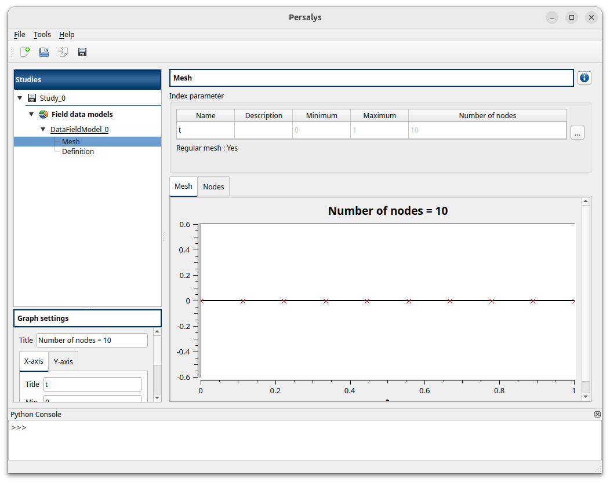
This window allows one to define a 1D mesh. The default mesh contains 10 nodes in the range [0, 1].
The window shows the index parameter name, description, bounds and number.
To edit the index parameters, double-click on the column of interest (ex: name, description).
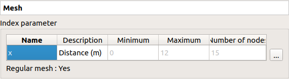
To modify the mesh click on … button: The window shows two ways to define a mesh:
Regular mesh: define the bounds (default: [0, 1], expected: floats) and the number of nodes (default: 10, expected: positive integer)
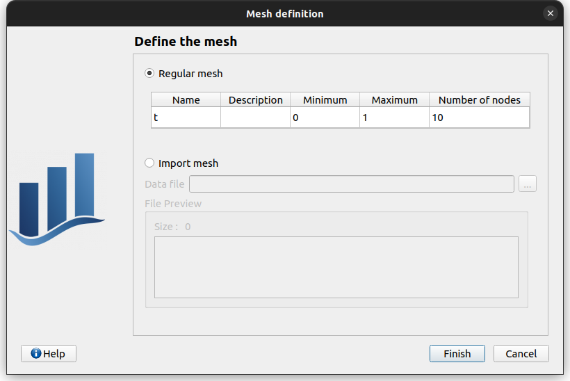
Imported mesh: Load a file containing only the mesh (in one row or one column, with or without header).
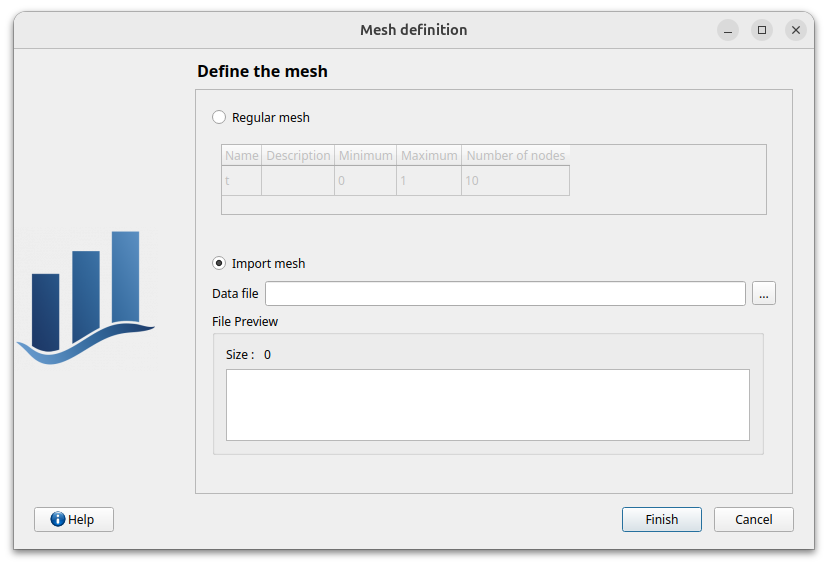